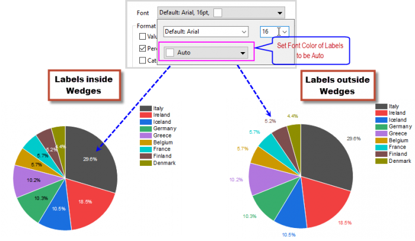
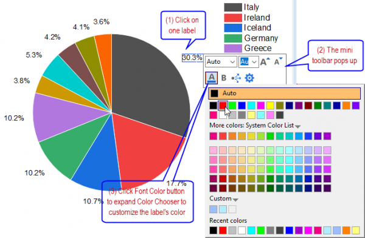

FAQ-1019 Wie passe ich die Schriftfarbe für die Beschriftungen eines Kreis-/Ringdiagramms benutzerdefiniert an?
FontColor-Labels-of-Pie
Letztes Update: 19.09.2019
Wenn Sie ein Kreis-/Ringdiagramm zeichnen, werden die Segmentbeschriftungen per Standard schwarz angezeigt. Wenn Sie die Schriftfarbe dieser Beschriftungen ändern möchten, können Sie
- doppelt auf ein Symbol klicken, um die Registerkarte Beschriftungen im Dialog Details Zeichnung zu öffnen. Erweitern Sie das Bedienfeld Schriftart und verwenden Sie die Farbauswahl, um die Schriftfarbe festzulegen. Bitte beachten Sie, sobald Sie die Schriftfarbe auf Auto gesetzt haben, befolgt die Beschriftungsfarbe der untenstehenden intelligenten Methode:
- 
- Klicken Sie auf eine Beschriftung im Diagramm. Eine Minisymbolleiste wird angezeigt, mit der Sie die Beschriftungsmerkmale (einschließlich Schriftfarbe) schnell bearbeiten können. Befolgen Sie die Schritte unten, um die Schriftfarbe für ausgewählte Beschriftungsobjekte benutzerdefiniert anzupassen:
- 
- Falls Sie die Schriftfarbe auf Auto gesetzt haben, wird die Farbe der aktuellen Beschriftung der Einstellung der Schriftfarbe auf der Registerkarte Beschriftungen im Dialog Details Zeichnung entsprechen.
- Falls Sie die Schriftfarbe des ausgewählten Beschriftungsobjekts geändert haben (dazu zählt das Festlegen von Auto), können Sie die Schaltfläche Formatierung anwenden auf auf der Minisymbolleiste verwenden, um die neue Farbe auf alle anderen Beschriftungen im aktuellen Kreis-/Ringdiagramm anzuwenden. Bitte beachten Sie, dass diese Änderung mit der Option Schriftfarbe auf der Registerkarte Beschriftungen im Dialog Details Zeichnung synchronisiert wird.
- Klicken Sie mit der rechten Maustaste auf eine Beschriftung, um den Dialog Anmerkung zu öffnen. In diesem Dialog können Sie die Option Schriftfarbe verwenden, um die Farbe für die aktuelle Beschriftung benutzerdefiniert anzupassen.
- Falls die Farbe auf Auto gesetzt wurde, wird die Farbe der aktuellen Beschriftung der Einstellung der Schriftfarbe auf der Registerkarte Beschriftungen im Dialog Details Zeichnung entsprechen.
- Sobald Sie die Farbe für die aktuelle Beschriftung in eine bestimmte Farbe geändert haben (wie "Rot"), können Sie die Auswahlliste Anwenden auf verwenden, um die Schriftfarbe auf die anderen Beschriftungen in der/dem aktuellen Zeichnung/Layer/Grafik anzuwenden. Bitte beachten Sie, dass diese Änderung mit der Option Schriftfarbe auf der Registerkarte Beschriftungen im Dialog Details Zeichnung synchronisiert wird.
Schlüsselwörter:Kreisbeschriftungen, automatische Farbe, Textobjekt, Segmentfarbe, Beschriftungsfarbe, Ringdiagramm